A precise, step-by-step working guide for charity partners
Who this is for. Charity Partners — the day-to-day charity-side users who create
referrals, send invitation links to participants, manage shelter locations, set up donors, and record donations.
This is not an onboarding guide; it assumes you've already finished onboarding and have a working login. For
account setup, see Onboarding a Charity.
What this document covers. Every task you perform in your day-to-day work, broken into
precise steps with the exact URLs, button names, required fields, validations, and side effects. Every
procedure here has been verified against the application's source code so you can trust it line-by-line.
Tasks covered
Read your dashboard — orient yourself before doing anything else.
Create a referral — the primary way to put a family into the system.
Browse, view, edit, or cancel referrals — manage your charity's pipeline.
Send a participant invite link — let the family pick their own location.
Upload, download, or delete documents — attach paperwork to referrals or invites.
Manage your shelter locations — the places your charity can house families.
Set up a donor — pointer to the separate Charity Donor Onboarding guide.
View your donors and donor setup requests — track who's giving and what's pending.
Record a donation and pay the platform fee — via Stripe Checkout.
View donation history — see what's been recorded.
Manage your charity profile — keep your contact info and address current.
Manage your team — pointer to the Onboarding a Charity Facilitator guide.
Reference: statuses you'll see
Referral statuses
Pending awaiting facilitator review ·
Approved ready for booking ·
Rejected declined (with reason) ·
Completed family stayed ·
Cancelled withdrawn before stay
Invite statuses
Pending sent, not yet opened ·
Opened participant clicked the link ·
Completed participant picked a location ·
Expired 7 days passed ·
Cancelled
Task 1 — Read your dashboard
TASK 1Read the Charity Partner Dashboard
When
Every login — orient before acting.
Where
/charity-partner/dashboard
The Charity Partner Dashboard is the purple-themed page you land on after login. It shows your charity's recent activity, key counts (referrals, invites, locations, donors), and quick-action buttons for the most common tasks.
You land on the dashboard. Read the stat cards at the top.
Scan the Recent Referrals table for new activity since your last visit.
Use a Quick Action button (e.g. Create Referral, Send Invite, Set Up a Donor, Record Donation) to jump directly into the most common workflows.
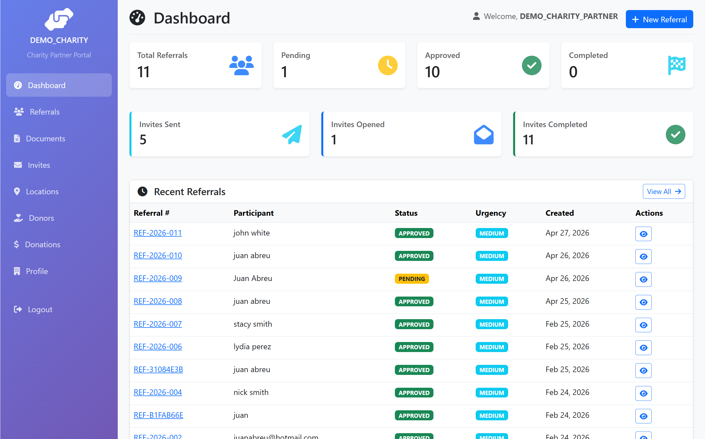
The Charity Partner Dashboard, with sidebar visible.
Tip: If the Pending Donor Setup badge in the sidebar's Donors menu shows a number, an admin has reviewed (or rejected) requests you submitted. Click through to read the result.
Task 2 — Create a referral
TASK 2Create a referral for a family
When
You know a specific family who needs housing and have their details.
Where
GET /charity-partner/referrals/new → POST /charity-partner/referrals/new
A referral is the primary record SafelyNested uses to track a family. Once you create one, it goes into your charity's Pending queue, a Charity Facilitator reviews it, and (if approved) a booking is created from it for an actual stay.
When to use this vs. an invite link
Create a referral directly when you know the participant and have their details, and you (or your team) have already chosen a location for them.
Send an invite link (Task 4) when you want the participant to pick their own location from your charity's options. The invite auto-creates a referral once they choose.
Steps
From the dashboard or from the Referrals page, click Create Referral (or + New Referral).
Fill in the participant section. Required fields are marked with red asterisks.
Set the urgency level — this drives how quickly the facilitator should review.
Optionally provide a needs description (1-3 sentences explaining the situation), allowed ZIP codes if location is restricted, and check Documents Required if paperwork must be uploaded.
Click Create Referral. You're redirected to the new referral's detail page with a success banner.
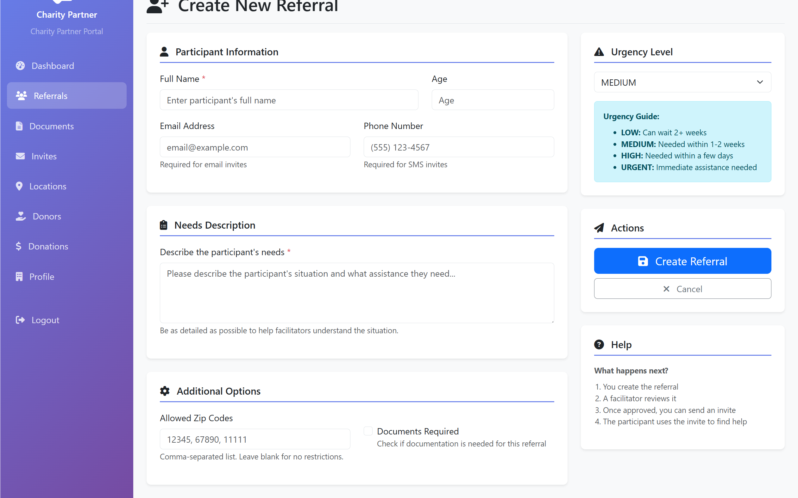
The new referral form. Required fields are marked with red asterisks.
Fields
Field
Required?
Notes
Full Name
Required
The participant's legal full name.
Age
Optional
Helps the facilitator gauge urgency.
Email Address
Optional
If provided, the participant gets an automatic confirmation email when a booking is created.
Phone Number
Optional
For SMS coordination.
Needs Description
Optional
Plain-language summary of the situation. Read by the facilitator and saved on the referral.
Allowed ZIP Codes
Optional
Comma-separated. Restricts the family to specific geographies.
Documents Required
Optional
Checkbox. If checked, you (or the participant via the invite flow) need to upload paperwork before booking.
Urgency Level
Required
LOW / MEDIUM / HIGH / CRITICAL.
What happens behind the scenes
Change
Detail
Status
Set to Pending.
Referral number
Generated automatically (format REF-YYYY-NNNN).
Charity link
Set to your charity (multi-tenant scoping).
Referred by
Set to your user record.
Monthly limit: Each charity has a monthly referral cap. If you hit it, the form returns "Monthly referral limit reached" and the referral is not saved. Contact your SafelyNested administrator to discuss raising it.
Task 3 — Browse, view, edit, or cancel referrals
TASK 3Manage your referral pipeline
When
Reviewing what's pending, fixing a typo, or pulling back a referral.
Where
/charity-partner/referrals
Browsing
Click Referrals in the sidebar.
The list shows every referral your charity has ever created, newest first.
Use the status filter buttons (All / Pending / Approved / Rejected / Completed / Cancelled) to focus.
Click any row to open its details.
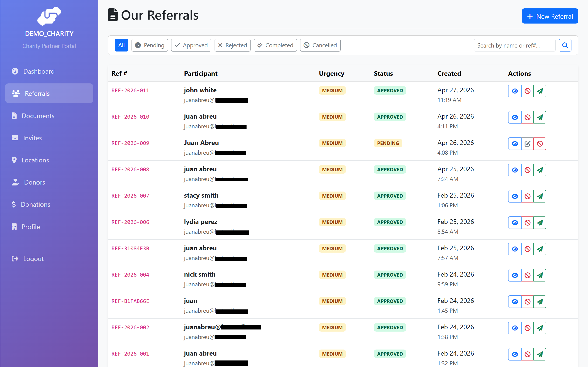
The Referrals list with status filter buttons.
Editing a referral
You can only edit a referral while its status is Pending. Once a facilitator approves or rejects it, the data is locked for audit reasons.
Open the referral's detail page.
If the status is Pending, click Edit at the top of the page.
Update participant info, needs description, urgency, allowed ZIPs, or the documents-required flag.
Click Update Referral.
Cancelling a referral
Open the referral's detail page.
Click Cancel.
The status flips to Cancelled and the referral leaves the active pipeline.
Important: A Completed referral cannot be cancelled — that would erase a record of a real stay. Approved or rejected referrals can still be cancelled, but cancelling won't undo their effects (e.g. emails already sent).
Task 4 — Send a participant invite link
TASK 4Send an invite link to a participant
When
You want the participant to pick their own location, or you want to capture their info via a public form.
Where
GET /charity-partner/invites/send → POST /charity-partner/invites/send
An invite link is a unique, time-limited URL the participant clicks. It opens a public page (no login required) where they pick a location from your charity's options. Once they pick, a referral is auto-created and shows up in your pipeline.
Steps
Click Invites in the sidebar, then click + Send New Invite. (Alternatively, from a specific referral's detail page, click Send Invite — this pre-links the invite to that referral.)
Fill in the recipient's name (required) and at least one of email or phone.
Pick the delivery method: Email or SMS.
Optionally describe the participant's needs and add a personal message. The needs description flows through to the auto-created referral.
Optionally restrict allowed ZIP codes.
Click Send Invite. The recipient receives an email or SMS with the unique link.
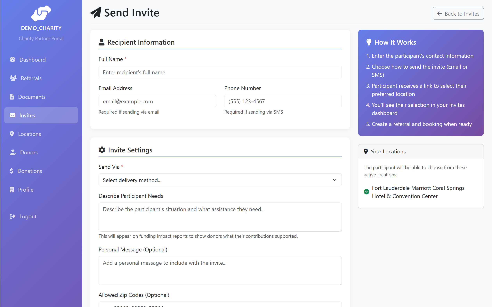
Send Invite form. The recipient gets a unique link valid for 7 days.
Fields
Field
Required?
Notes
Full Name
Required
The recipient's name as they should see it in the invitation.
Email Address
Required if Send Via = Email
Used to deliver the invite link.
Phone Number
Required if Send Via = SMS
Used for SMS delivery.
Send Via
Required
Email or SMS.
Describe Participant Needs
Optional
Flows through to the referral that's auto-created when they pick a location.
Personal Message
Optional
A short note included in the email/SMS.
Allowed ZIP Codes
Optional
Restricts which locations the participant sees on their pick-a-location page.
Link to Existing Referral
Optional
If you have a referral already, link it so the location selection updates that referral instead of creating a new one.
How long the link is good for: The invite token expires after 7 days. After that, the recipient sees an "Invite expired" page and you'll need to send a new one.
An invite hasn't been opened, the recipient lost the link, or the situation changed.
Where
/charity-partner/invites
Steps
Click Invites in the sidebar.
The list shows every invite ever sent. Each row shows: recipient name, contact method, status, sent date, expiry, and action buttons.
Filter by status using the buttons at the top (Pending / Opened / Completed / Expired / Cancelled).
Use the action buttons:
Resend — sends the invitation email or SMS again. The original token stays valid.
Cancel — voids the invite token. The recipient can no longer use the link.
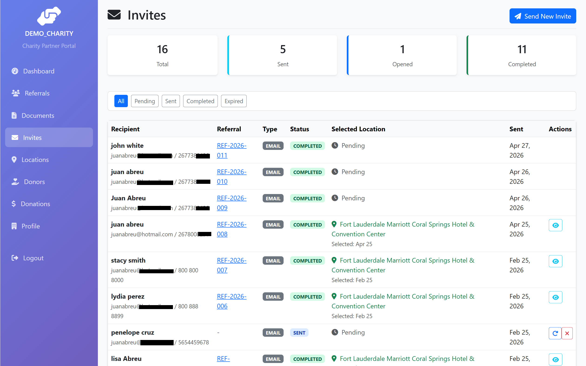
Invites list with action buttons.
What the statuses mean
Status
What it means
Pending
Sent, but the recipient hasn't opened the link yet.
Opened
The recipient clicked the link and saw the location-picker page, but didn't yet finish.
Completed
The recipient picked a location. A referral has been auto-created (or updated, if linked) and is now in your Pending queue.
Expired
7 days passed without completion. Send a new invite to try again.
Cancelled
You manually voided this invite.
Task 6 — Upload, download, or delete documents
TASK 6Manage documents on referrals and invites
When
You need to attach paperwork (ID, proof of need, intake forms) to a referral or invite.
Where
/charity-partner/documents and /charity-partner/documents/upload
Upload a document
From the sidebar click Documents, then + Upload Document. Or, from a referral or invite detail page, click the upload button there to pre-link the document.
Choose a file (PDF, image, etc.).
Pick a Document Type.
Optionally pick a referral or invite from the dropdowns to attach to. If both are blank, the document is uploaded to your charity's general document library.
Optionally write a short description.
Click Upload.
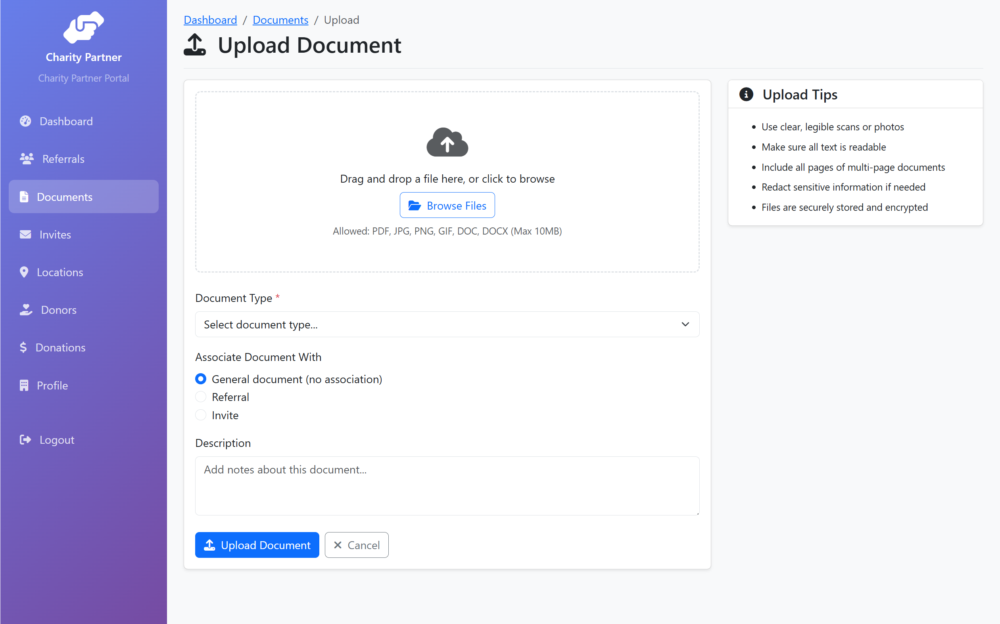
Document upload form.
Download or delete
Open the documents list at /charity-partner/documents.
Click Download on a row to fetch the file.
Click Delete to permanently remove a document. Deleted files cannot be recovered, so confirm carefully.
Sensitive files: Documents may contain participant ID, financial info, or family details. Avoid uploading anything not strictly needed for the referral or booking. Delete documents that are no longer required.
Task 7 — Manage your shelter locations
TASK 7Manage your charity's shelter locations
When
Adding a new shelter, updating contact info, or temporarily taking a location offline.
Where
/charity-partner/locations
Locations represent the physical places your charity can house families. They appear in the location dropdown when a Charity Facilitator creates a booking, and on the public invite page when a participant picks a location.
Add a location
Click Locations in the sidebar, then + Add Location.
Fill in the form. Only Location Name is required, but address, capacity, and services help facilitators and participants pick correctly.
Check Active to make the location available for bookings immediately. Leave it unchecked to add a draft entry.
Click Create Location.
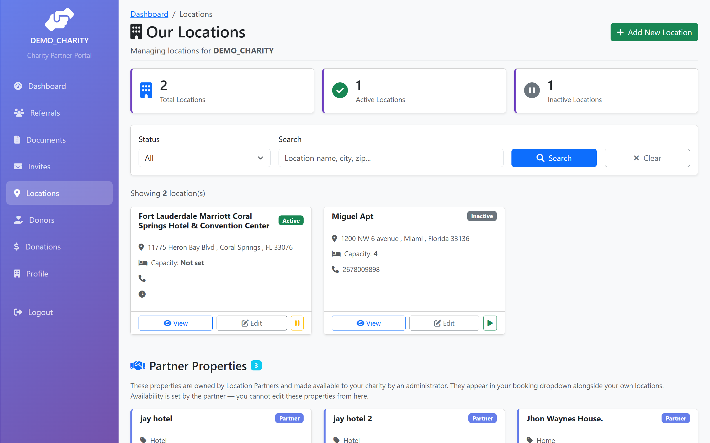
Locations list with management actions.
Edit, toggle active, or delete a location
Edit — click the location row, then Edit. Update any field and save. Existing bookings keep their original snapshot of the location data.
Toggle Active — takes the location out of (or back into) the booking dropdown without deleting it. Use this if a location is temporarily unavailable.
Delete — permanently removes the location. Existing bookings retain their historical record (location name, address) so this doesn't break past data.
Fields
Field
Required?
Notes
Location Name
Required
Must be unique within your charity.
Address, City, State, ZIP, Country
Optional
Country defaults to USA.
Phone, Email
Optional
Contact info for the location.
Capacity
Optional
Maximum guests/beds.
Description, Services Offered, Hours of Operation
Optional
Free-text fields shown to participants.
Is Active
Optional
Checkbox. Inactive locations don't appear in booking dropdowns.
Duplicate names: If you try to create a location with a name that already exists at your charity, the form returns "Location name already exists." Pick a unique name (e.g. add city or building qualifier).
Task 8 — Set up a donor
TASK 8Submit a donor setup request
When
You need to register a donor to your charity in the system.
Where
/charity-partner/donors/setup
Setting up a donor is a request flow — you submit a request, and a SafelyNested administrator approves or rejects it. Two paths: link an existing donor that's already in the system, or register a brand-new donor.
See the dedicated guide
The full step-by-step procedure for setting up a donor — including the search-existing flow, the new-donor form fields, and what happens after admin approval — is in the separate guide Onboarding a Charity Donor (charity-donor-onboarding.pdf). Refer to that document for this task.
Task 9 — View donors and donor setup requests
TASK 9View your charity's donors and request status
When
Looking up a donor's details, or checking on a setup request you submitted.
Where
/charity-partner/donors and /charity-partner/donors/setup-requests
View your donors
Click Donors in the sidebar.
The list shows every donor approved and linked to your charity.
Use the search box to filter by name or email.
Click any donor to see their full record, contact info, and donation history.
View your donor setup requests
From the Donors page, click View My Requests, or go to /charity-partner/donors/setup-requests directly.
The list shows all requests you've submitted with their status: Pending, Approved, or Rejected.
For rejected requests, the admin's reason is shown. You can submit a new request after addressing the concern.
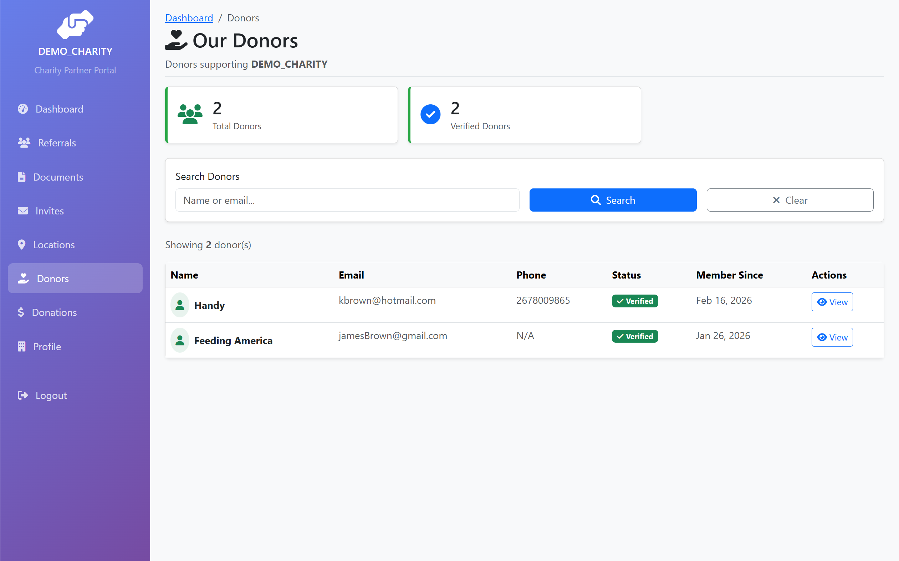
The Donors list with the search field at the top.
Task 10 — Record a donation and pay the platform fee
TASK 10Record a donation and pay the 10% fee via Stripe
When
A donor gave money directly to your charity (cash, check, etc.) and you need to record it on the platform.
Where
/charity-partner/donations/record
Donations to your charity happen outside SafelyNested — donors give you cash, check, ACH, etc. directly. To track that money on the platform (and use it later to fund bookings), you record the donation here. SafelyNested charges a 10% platform fee (7% platform + 3% facilitator), which you pay via Stripe Checkout when you submit the record.
Steps
From the dashboard, click the green Record Donation quick-action button. Or go to Donations in the sidebar and click + Record Donation.
Fill in the form: Donor Name, Donor Email (optional), Donation Amount, Date Received, and optional Notes.
As you type the amount, the page shows a live fee breakdown: platform fee (7%), facilitator fee (3%), total fee, and net amount credited to your charity.
Click Pay Fee & Record Donation. You're redirected to Stripe Checkout.
On Stripe's hosted page, pay the fee using a credit/debit card or US bank transfer (ACH).
Stripe redirects you back to a success page. The donation is now recorded as Verified and visible in your donations list.
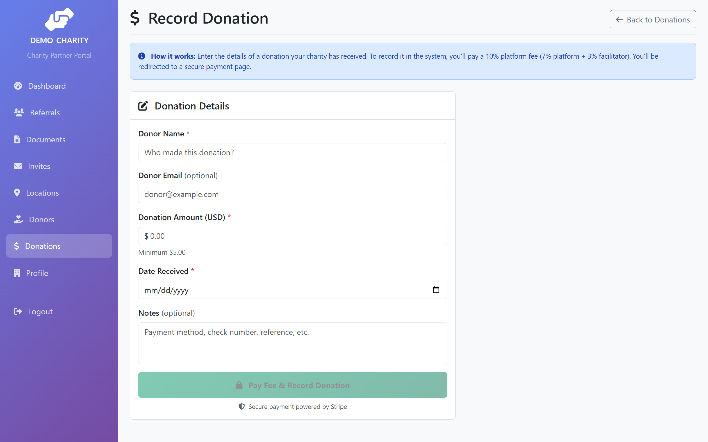
The Record Donation form with the live fee calculator.
Fields and validations
Field
Required?
Validation
Donor Name
Required
Up to 255 chars.
Donor Email
Optional
Used for donor receipts.
Donation Amount
Required
Minimum $5.00. Smaller amounts are rejected because the 10% fee falls below Stripe's minimum charge.
Date Received
Required
The actual date your charity received the money. Cannot be in the future.
Net amount credited to your charity (available to fund bookings): $900.00
What happens behind the scenes after payment
Change
Detail
Stripe Checkout session
Created with the fee amount; you're redirected to Stripe.
Webhook notification
After payment completes, Stripe notifies SafelyNested.
Donation record
Created with status Verified and source CHARITY_RECORDED.
Receipt email
Sent to your charity's primary contact.
Available to fund bookings
Immediately. The full net amount can be used by facilitators when creating bookings.
Payment options: Stripe Checkout supports both credit/debit cards (instant) and US bank transfers (ACH, lower fees but takes 1-4 business days to settle in production). For ACH, your donation will appear once the payment clears.
Tip: If you accidentally cancel out of Stripe Checkout, no fee is charged and no donation is recorded. Start over from the form.
Task 11 — View donation history
TASK 11View your charity's donations
When
Reviewing what's been recorded, checking remaining balances for funding bookings.
Where
/charity-partner/donations
Steps
Click Donations in the sidebar.
The list shows every donation recorded for your charity, newest first.
Each row shows: donor name, amount, date received, fee paid, net amount, source (Manual / Charity-Recorded / Stripe), and current status.
Click a row to see the donation's detail page, including any bookings it has funded and remaining balance.
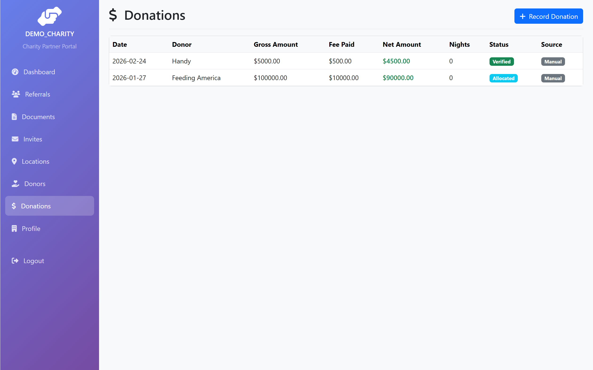
The Donations list with source badges and statuses.
Donation statuses
Status
What it means
Verified
Fee paid, donation confirmed; full net amount available to fund bookings.
Allocated
One or more bookings have been funded from this donation.
Partially Used
Some funded nights have been consumed by completed stays.
Fully Used
All funds have been consumed.
Cancelled
Admin cancelled or rejected.
Task 12 — Manage your charity profile
TASK 12Update your charity's contact info and address
When
Your charity moved, your contact phone changed, or you need to update org info.
Where
/charity-partner/profile and /charity-partner/profile/edit
Steps
Click Profile in the sidebar to view your charity's current info (name, organization type, EIN, contact name/email/phone, address, mission statement).
Click Edit Profile to update.
Modify the fields you need to change and click Update Profile.
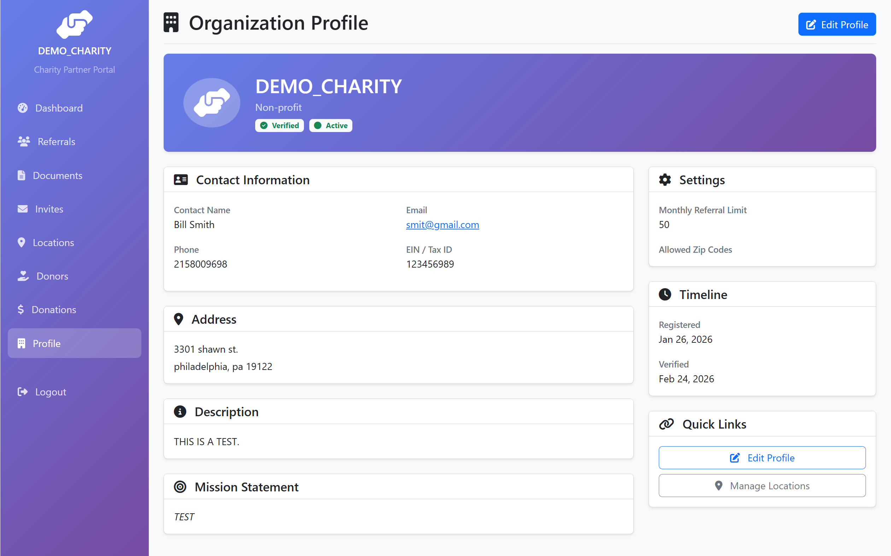
The Charity Profile page.
What you can change: Contact name, email, phone, address, description, mission statement. Items requiring admin involvement (charity name, organization type, EIN, verification status) typically need to be requested via support.
Task 13 — Manage your team
TASK 13Invite team members or facilitators
When
Adding a new team member to your charity, or requesting a facilitator promotion.
Where
/charity-partner/team (visible to primary contact and Charity Facilitators)
Inviting a team member uses the same flow as facilitator onboarding (a Charity Facilitator is a team member with elevated permissions). The full procedure — including the email-domain restriction and the post-registration step where an admin promotes the user to facilitator — is documented separately.
See the dedicated guide
The complete step-by-step procedure for inviting a team member or facilitator is in Onboarding a Charity Facilitator (charity-facilitator-onboarding.pdf). Refer to that document for this task.
Visibility: The Team menu item appears for the charity's primary contact and for any user with the Charity Facilitator role. Standard Charity Partners do not see the Team link — ask your primary contact or facilitator to send invitations on your behalf.
Common errors and what they mean
Error message
What to do
"Monthly referral limit reached"
Your charity has hit its cap for the month. Contact your SafelyNested administrator to request an increase if you have legitimate referrals waiting.
"Referral cannot be edited after submission"
The referral was already approved or rejected. Edit is only available in Pending status.
"Cannot cancel completed referral"
The referral resulted in an actual stay. You cannot retroactively cancel that record.
"Please provide either an email or phone number"
On the Send Invite form, both contact fields were empty. At least one is required.
"Email address is required for email invites" / "Phone number is required for SMS invites"
Match your delivery method to the contact info you provided.
"Location name already exists"
Pick a unique location name within your charity.
"Minimum donation amount is $5.00"
Stripe's minimum charge limits the smallest donation that can be recorded with a fee.
"Date received cannot be in the future"
The donation must have already been received in real life before recording.
Help and escalation
If a workflow gets stuck and a family is depending on it — for instance, a referral can't be submitted because of an error, or a donation payment fails — do not work around the system by tracking things outside SafelyNested. Contact your SafelyNested administrator immediately, describe what you're trying to do, share the error message verbatim, and explain the urgency. Edge cases belong with the admin, not in shadow records.